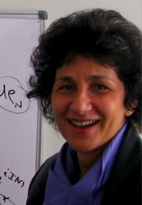

|
Andrea R. Nahmod Professor of Mathematics Tel. (413)
545-6031 nahmod(at)math dot umass dot edu |
 |
||||||||||||||||||||||||||||||||||||
|---|---|---|---|---|---|---|---|---|---|---|---|---|---|---|---|---|---|---|---|---|---|---|---|---|---|---|---|---|---|---|---|---|---|---|---|---|---|---|
|
Conferences,
Special Programs and other Research Events : Live-New!!
SIMONS
COLLABORATION ON WAVE TURBULENCE New!! Upcoming Fall 2021:
ICERM SEMESTER PROGRAM ON : October 5, 2019, 9AM-6PM at UConn
(Storrs). All welcome! Friday April
12th 2019, 12
Noon-6:30PM Lederle Tower 1634
An
Afternoon in Honor of Cora Sadosky
|
||||||||||||||||||||||||||||||||||||||
| Profile |
||||||||||||||||||||||||||||||||||||||
|
Click here for some
info.
|
||||||||||||||||||||||||||||||||||||||
| Research |
||||||||||||||||||||||||||||||||||||||
|
My research lies at the
overlap of Nonlinear
Fourier Analysis/Harmonic Analysis and Nonlinear Partial
Differential Equations integrating into it tools
from geometry, gauge theory and probability. These are two
areas that intimately relate to each other by way of
decompositions, frequency interactions analysis and
nonlinear estimates. In recent years, its main focus has
been to investigate: Here are some of my Publications. Research partially funded by the National Science Foundation. |
||||||||||||||||||||||||||||||||||||||
| Teaching |
||||||||||||||||||||||||||||||||||||||
Spring 2020:
|
||||||||||||||||||||||||||||||||||||||
| PhD Students |
||||||||||||||||||||||||||||||||||||||
| Nikolaos Tzirakis (PhD 2004) Nonlinear Dispersive PDEs. Tadahiro Oh (PhD 2007) Nonlinear Dispersive PDEs. Viktor Grigoryan (PhD 2008) Geometric Nonlinear PDEs. Allison Tanguay (PhD 2012) Nonlinear Wave Equations. Haitian Yue (PhD 2018) Nonlinear Dispersive PDEs. Xueying Yu (PhD 2018) Nonlinear Dispersive PDEs. Michael Boratko(PhD 2018) Nonlinear Dispersive PDEs. Dean Katsaros (current) Nonlinear Evolution PDEs. Byeongho Ban (current) Nonlinear Evolution PDEs. |
||||||||||||||||||||||||||||||||||||||
| REU and
Capstone Students |
||||||||||||||||||||||||||||||||||||||
| Adam Cardenal-Stakenas (2001-2002; REU and Capstone research semester) Research on Fourier analysis, wavelet theory and signal recognition. Nathan T. Senecal (2011-2012; REU and Capstone research year) Research on Fourier analysis, geometry and combinatorics Derek M. Wood (2011-2012; Capstone research year) Research on Harmonic analysis and nonlinear dispersive PDEs. Michael Breeling (2012-2013; Capstone research year) Research on Fourier analysis, geometry and combinatorics Domonic Mei (2012-2013; Capstone research year) Research on Fourier analysis and analytic number theory. Scott Destromp (2016 REU) Research on Invariant Gibbs measures for 2D periodic NLS equations. |
||||||||||||||||||||||||||||||||||||||